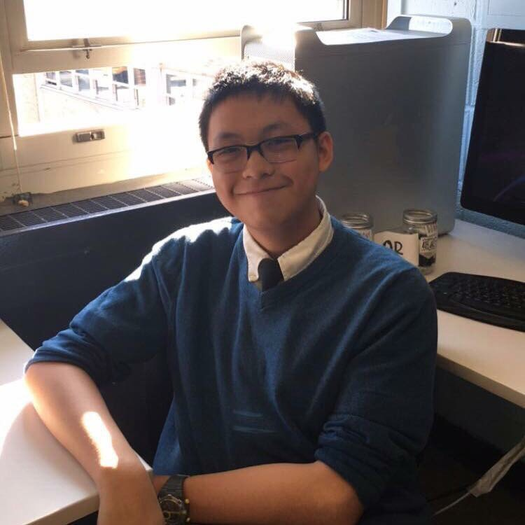
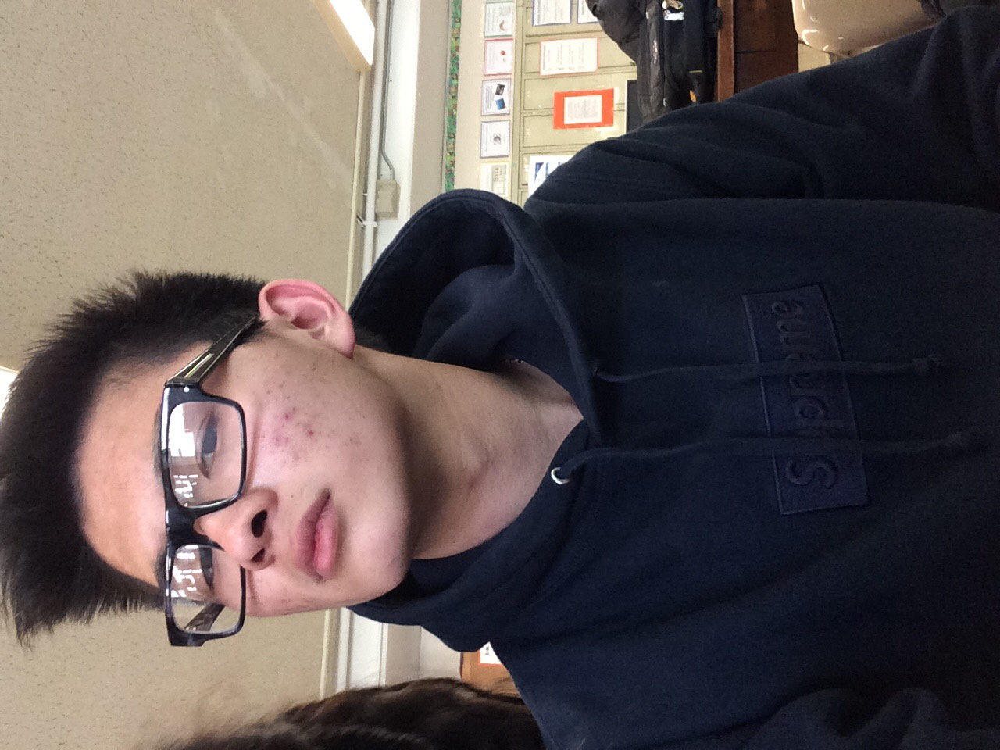

<section id="meetteam">
  <!-- Page Content -->
  <div class="container">
      <div class="row">
        <div class="col-lg-4">
          
        </div>
        <div class="col-lg-6">
          <h3>Alan Cao</h3>
          <p>
            Alan is a junior at Francis Lewis High School. By day, he is a student, but at night, he is a 
            security-oriented developer, working extensively with Linux systems programming, as well as full-stack
            web development. With an interest in cybersecurity, he hopes to become Security+ certified before college.
            Alan's works in programming ranges from system-level applications to cybersecurity projects to web applications.
            He is also an avid <a href="http://codemuch.tech/blog">technical writer.</a>
          </p>
          <ul class="icons">
            <li><a class="btn btn-default" href="https://github.com/ex0dus-0x"><i class="fa fa-github"></i> Github</a></li>
            <li><a class="btn btn-default" href="https://codemuch.tech"><i class="fa fa-code"></i> Website</a></li>
            <li><a class="btn btn-default" href="https://keybase.io/ex0dus/key.asc"><i class="fa fa-key"></i> Keybase PGP</a></li>
          </ul>
        </div>
      </div>
      <div class="row">
        <div class="col-lg-4">
            
        </div>
        <div class="col-lg-6">
          <h3>Alexs Wijoyo</h3>
          <p>
            Alexs is a senior at Francis Lewis High School. With a growing passion in cybersecurity
            and robotics, he hopes to utilize his interests into creating a more secure society. As 
            the captain of his robotics team, Alexs works extensively with everything mechanical. 
            Through that expertise, Alexs hopes to create amazing projects that will someday become
            beneficial to the cybersecurity field and eventually the world.
          </p>
          <ul class="icons">
            <li><a class="btn btn-default" href="https://github.com/xvxd4sh.github.io"><i class="fa fa-github"></i> Github</a></li>
            <li><a class="btn btn-default" href="https://xvxd4sh.github.io"><i class="fa fa-code"></i> Website</a></li>
          </ul>
        </div>
      </div>
        <div class="col-lg-12">
          <h3>We are still a young and growing organization, and we want diverse and
          talented people just like you! Experience in technology is not a necessity. We are actively
          seeking those who with a diverse skillset, from writing to design to administration.<br /><br />
          Interested? Fill out this <a href="">this form</a> and send a copy of your resume to <a href="mailto:team@intrusive.tech">team@intrusive.tech</a> !</h3>
        </div>
      </div>
    </div>
</section>